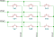
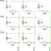
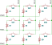
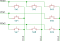

GPIO Keyboard Matrix
The gpio-kbd-matrix driver supports a large variety of keyboard
matrix hardware configurations and has numerous options to change its behavior.
This is an overview of some common setups and how they can be supported by the
driver.
The conventional configuration for all of these is that the driver reads on the row GPIOs (inputs) and selects on the columns GPIOs (output).
Base use case, no isolation diodes, interrupt capable GPIOs
This is the common configuration found on consumer keyboards with membrane switches and flexible circuit boards, no isolation diodes, requires ghosting detection (which is enabled by default).
{kind=link}

A 3x3 matrix, no diodes
The system must support GPIO interrupts, and the interrupt can be enabled on all row GPIOs at the same time.
kbd-matrix {
compatible = "gpio-kbd-matrix";
row-gpios = <&gpio0 0 (GPIO_PULL_UP | GPIO_ACTIVE_LOW)>,
<&gpio0 1 (GPIO_PULL_UP | GPIO_ACTIVE_LOW)>,
<&gpio0 2 (GPIO_PULL_UP | GPIO_ACTIVE_LOW)>;
col-gpios = <&gpio0 3 GPIO_ACTIVE_LOW>,
<&gpio0 4 GPIO_ACTIVE_LOW>,
<&gpio0 5 GPIO_ACTIVE_LOW>;
};
In this configuration the matrix scanning library enters idle mode once all keys are released, and the keyboard matrix thread only wakes up when a key has been pressed.
GPIOs for columns that are not currently selected are configured in high
impedance mode. This means that the row state may need some time to settle to
avoid misreading the key state from a column to the following one. The settle
time can be tweaked by changing the settle-time-us property.
Isolation diodes
If the matrix has isolation diodes for every key, then it’s possible to:
disable ghosting detection, allowing any key combination to be detected
configuring the driver to drive unselected columns GPIO to inactive state rather than high impedance, this allows to reduce the settle time (potentially down to 0), and use the more efficient port wide GPIO read APIs (happens automatically if the GPIO pins are sequential)
Matrixes with diodes going from rows to columns must use pull-ups on rows and active low columns.
{kind=link}

A 3x3 matrix with row to column isolation diodes.
kbd-matrix {
compatible = "gpio-kbd-matrix";
row-gpios = <&gpio0 0 (GPIO_PULL_UP | GPIO_ACTIVE_LOW)>,
<&gpio0 1 (GPIO_PULL_UP | GPIO_ACTIVE_LOW)>,
<&gpio0 2 (GPIO_PULL_UP | GPIO_ACTIVE_LOW)>;
col-gpios = <&gpio0 3 GPIO_ACTIVE_LOW>,
<&gpio0 4 GPIO_ACTIVE_LOW>,
<&gpio0 5 GPIO_ACTIVE_LOW>;
col-drive-inactive;
settle-time-us = <0>;
no-ghostkey-check;
};
Matrixes with diodes going from columns to rows must use pull-downs on rows and active high columns.
{kind=link}

A 3x3 matrix with column to row isolation diodes.
kbd-matrix {
compatible = "gpio-kbd-matrix";
row-gpios = <&gpio0 0 (GPIO_PULL_DOWN | GPIO_ACTIVE_HIGH)>,
<&gpio0 1 (GPIO_PULL_DOWN | GPIO_ACTIVE_HIGH)>,
<&gpio0 2 (GPIO_PULL_DOWN | GPIO_ACTIVE_HIGH)>;
col-gpios = <&gpio0 3 GPIO_ACTIVE_HIGH>,
<&gpio0 4 GPIO_ACTIVE_HIGH>,
<&gpio0 5 GPIO_ACTIVE_HIGH>;
col-drive-inactive;
settle-time-us = <0>;
no-ghostkey-check;
};
GPIO with no interrupt support
Some GPIO controllers have limitations on GPIO interrupts, and may not support enabling interrupts on all row GPIOs at the same time.
In this case, the driver can be configured to not use interrupt at all, and instead idle by selecting all columns and keep polling on the row GPIOs, which is a single GPIO API operation if the pins are sequential.
This configuration can be enabled by setting the idle-mode property to
poll:
kbd-matrix {
compatible = "gpio-kbd-matrix";
...
idle-mode = "poll";
};
GPIO multiplexer
In more extreme cases, such as if the columns are using a multiplexer and it’s impossible to select all of them at the same time, the driver can be configured to scan continuously.
This can be done by setting idle-mode to scan and poll-timeout-ms
to 0.
kbd-matrix {
compatible = "gpio-kbd-matrix";
...
poll-timeout-ms = <0>;
idle-mode = "scan";
};
Row and column GPIO selection
If the row GPIOs are sequential and on the same gpio controller, the driver automatically switches API to read from the whole GPIO port rather than the individual pins. This is particularly useful if the GPIOs are not memory mapped, for example on an I2C or SPI port expander, as this significantly reduces the number of transactions on the corresponding bus.
The same is true for column GPIOs, but only if the matrix is configured for
col-drive-inactive, so that is only usable for matrixes with isolation
diodes.
16-bit row support
The driver uses an 8-bit datatype to store the row state by default, which
limits the matrix row size to 8. This can be increased to 16 by enabling the
CONFIG_INPUT_KBD_MATRIX_16_BIT_ROW option.
Actual key mask configuration
If the key matrix is not complete, a map of the keys that are actually
populated can be specified using the actual-key-mask property. This allows
the matrix state to be filtered to remove keys that are not present before
ghosting detection, potentially allowing key combinations that would otherwise
be blocked by it.
For example for a 3x3 matrix missing a key:
{kind=link}

A 3x3 matrix missing a key.
kbd-matrix {
compatible = "gpio-kbd-matrix";
...
actual-key-mask = <0x07 0x05 0x07>;
};
This would allow, for example, to detect pressing Sw1, SW2 and SW4
at the same time without triggering anti ghosting.
The actual key mask can be changed at runtime by enabling
CONFIG_INPUT_KBD_ACTUAL_KEY_MASK_DYNAMIC and the using the
input_kbd_matrix_actual_key_mask_set() API.
Keymap configuration
Keyboard matrix devices report a series of x/y/touch events. These can be
mapped to normal key events using the input-keymap driver.
For example, the following would setup a keymap device that take the
x/y/touch events as an input and generate corresponding key events as an
output:
kbd {
...
keymap {
compatible = "input-keymap";
keymap = <
MATRIX_KEY(0, 0, INPUT_KEY_1)
MATRIX_KEY(0, 1, INPUT_KEY_2)
MATRIX_KEY(0, 2, INPUT_KEY_3)
MATRIX_KEY(1, 0, INPUT_KEY_4)
MATRIX_KEY(1, 1, INPUT_KEY_5)
MATRIX_KEY(1, 2, INPUT_KEY_6)
MATRIX_KEY(2, 0, INPUT_KEY_7)
MATRIX_KEY(2, 1, INPUT_KEY_8)
MATRIX_KEY(2, 2, INPUT_KEY_9)
>;
row-size = <3>;
col-size = <3>;
};
};
Keyboard matrix shell commands
The shell command kbd_matrix_state_dump can be used to test the
functionality of any keyboard matrix driver implemented using the keyboard
matrix library. Once enabled it logs the state of the matrix every time it
changes, and once disabled it prints an or-mask of any key that has been
detected, which can be used to set the actual-key-mask property.
The command can be enabled using the
CONFIG_INPUT_SHELL_KBD_MATRIX_STATE.
Example usage:
uart:~$ device list
devices:
- kbd-matrix (READY)
uart:~$ input kbd_matrix_state_dump kbd-matrix
Keyboard state logging enabled for kbd-matrix
[00:01:41.678,466] <inf> input: kbd-matrix state [01 -- -- --] (1)
[00:01:41.784,912] <inf> input: kbd-matrix state [-- -- -- --] (0)
...
press more buttons
...
uart:~$ input kbd_matrix_state_dump off
Keyboard state logging disabled
[00:01:47.967,651] <inf> input: kbd-matrix key-mask [07 05 07 --] (8)
Keyboard matrix library
The GPIO keyboard matrix driver is based on a generic keyboard matrix library, which implements the core functionalities such as scanning delays, debouncing, idle mode etc. This can be reused to implement other keyboard matrix drivers, potentially application specific.